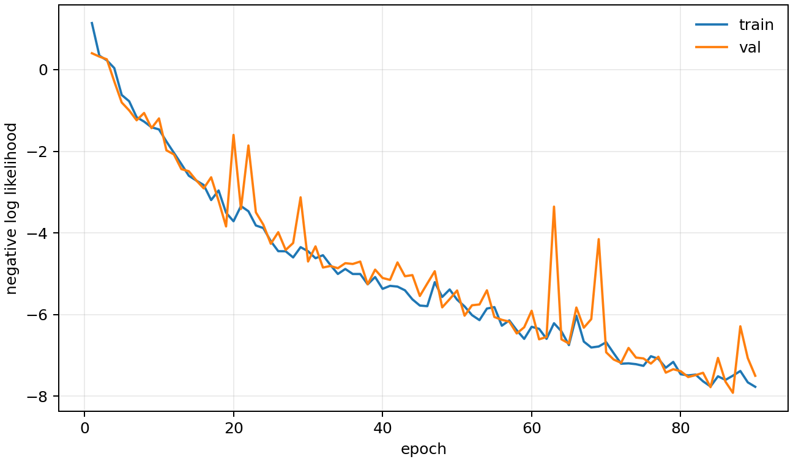
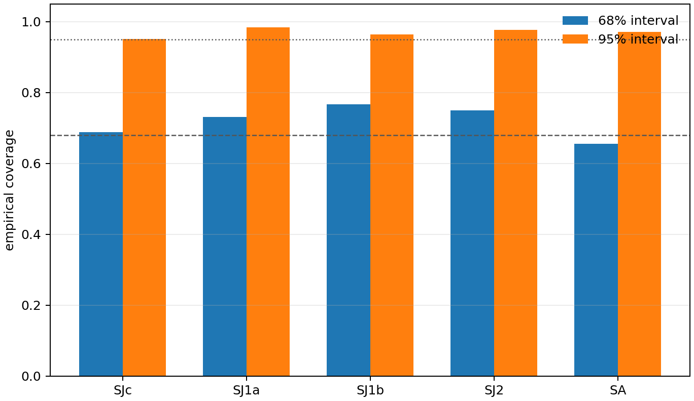
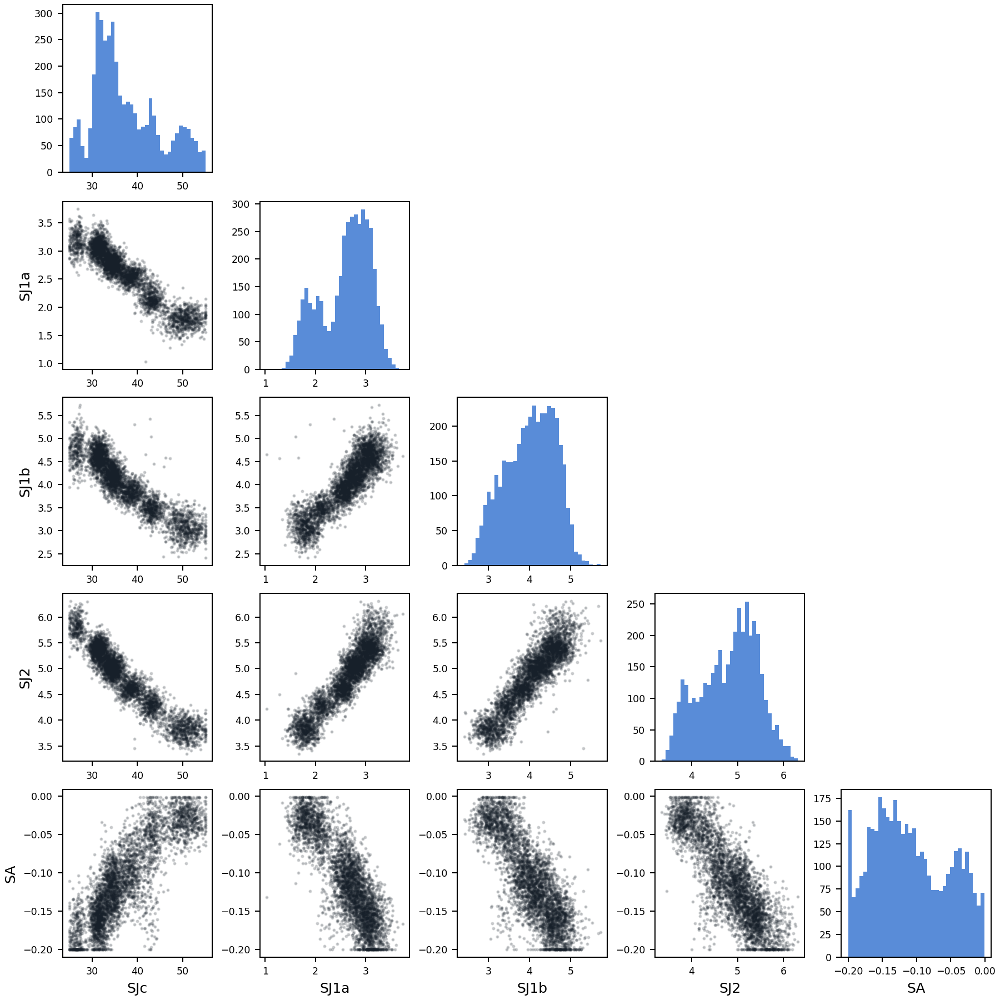

LNO327 CNN 后验推断报告
这一步不只输出一个参数点，而是输出参数分布。9-component mixture density posterior 用来检查不确定性、coverage 和参数耦合。
| 数据集 | /home/linux/work/ins-cnn/data/lno327_inverse_4d_wide_fwhm10_n2048_q160_e180_h81_k121_l5.h5 |
|---|---|
| 模型 | 9-component mixture density posterior, components=9, hidden=96, embedding=192 |
| 训练 | epochs=90, best_epoch=87, batch=48, AMP=True |
| 测试误差 | mean range MAE = 8.98%, MAE = 0.9865 meV |
| Coverage | 68% overall = 71.8%, 95% overall = 96.9% |
| 耗时 | 0.34 h |
每个参数的误差和可信区间覆盖率
| 参数 | MAE | RMSE | R2 | MAE/范围 | 68%覆盖 | 95%覆盖 |
|---|---|---|---|---|---|---|
| SJc | 3.922 | 4.918 | 0.648 | 13.08% | 68.8% | 95.1% |
| SJ1a | 0.2673 | 0.3267 | 0.952 | 4.62% | 73.0% | 98.4% |
| SJ1b | 0.3973 | 0.5003 | 0.928 | 5.31% | 76.6% | 96.4% |
| SJ2 | 0.3099 | 0.3931 | 0.969 | 3.88% | 75.0% | 97.7% |
| SA | 0.0358 | 0.04301 | 0.364 | 18.02% | 65.5% | 97.0% |
论文参考谱的后验
这里显示 paper reference spectrum 输入后得到的参数后验。宽度越大，说明谱图对该参数约束越弱。
| 参数 | mean | std | q16 | q84 |
|---|---|---|---|---|
| SJc | 37.43 | 7.275 | 31.05 | 45.94 |
| SJ1a | 2.6 | 0.4872 | 1.979 | 3.08 |
| SJ1b | 4.016 | 0.6027 | 3.334 | 4.648 |
| SJ2 | 4.815 | 0.619 | 4.069 | 5.431 |
| SA | -0.1089 | 0.05407 | -0.1659 | -0.04114 |
可视化


